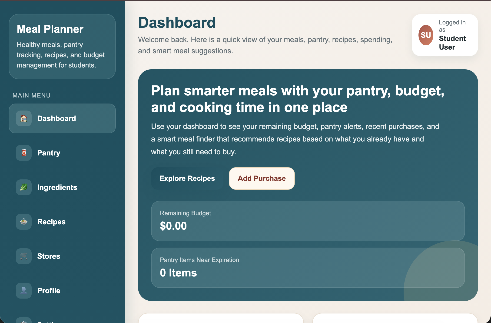
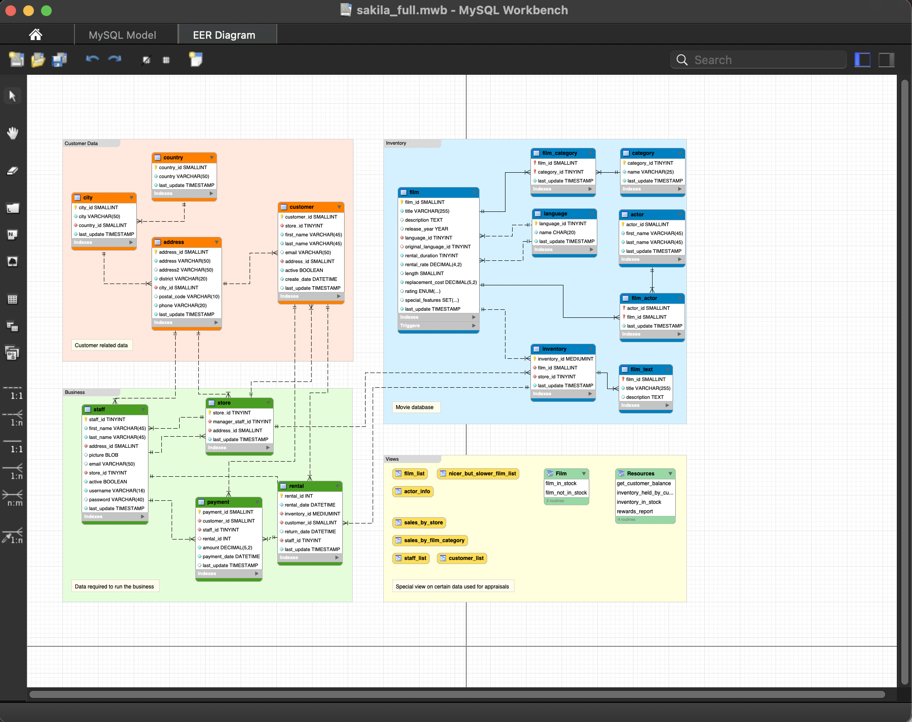
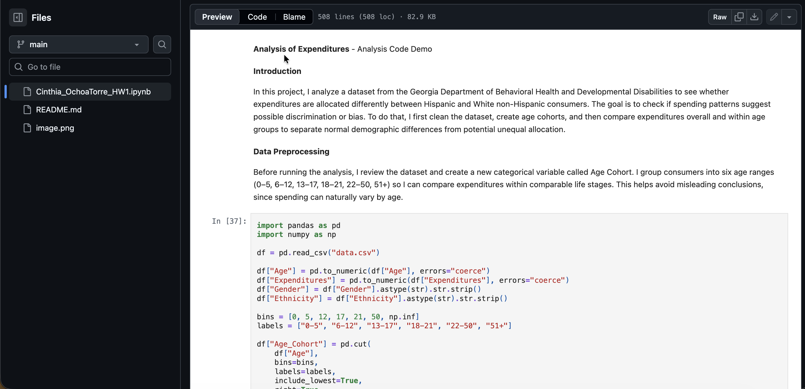
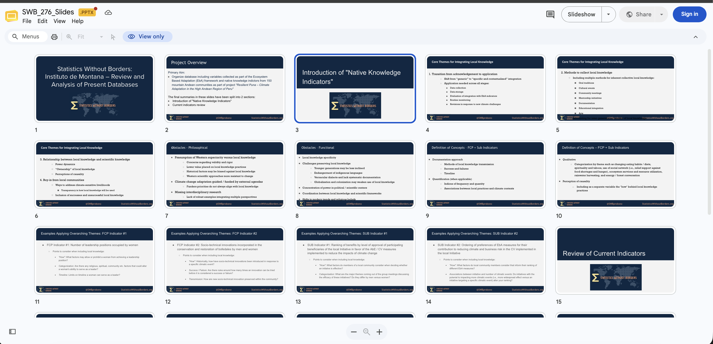

Projects and Portfolio
This page highlights some of the academic and technical projects I have worked on as a Data Science student.
These projects helped me practice skills in SQL, data cleaning, database design, validation, and research support.
Through these experiences, I have learned how to solve problems, organize information, and create more reliable data systems.
Grocery Planning System


The Grocery Planning System was a Spring 2026 project focused on designing and implementing a relational database.
I created normalized schemas using 3NF to improve data integrity and consistency.
I also developed SQL queries using JOIN, LEFT JOIN, GROUP BY, and HAVING to support validation, filtering, and business logic.
This project also included logic to identify missing data, such as unavailable ingredients, and calculate required costs.
I helped integrate the frontend and backend using REST APIs, allowing real-time data validation and updates.
I also worked on frontend wireframes and testing to make sure the system was accurate and easy to use.
Data Quality & Validation Project

This project focused on cleaning and preparing datasets by handling missing values, duplicates, and inconsistencies.
I used Pandas and SQL-based logic to transform, filter, and validate data.
The goal was to make the dataset more accurate, complete, and reliable before generating insights.
I also created rule-based validation steps to simulate real-world data quality workflows.
By identifying and correcting anomalies, I improved the overall reliability of the dataset.
This project helped me understand why clean and trustworthy data is important in data analysis.
Statistics Without Borders - Project 276

In this project, I helped design a database structure to support research on climate change adaptation in Andean communities.
The project focused on organizing information in a way that could support community-based research and data collection.
This experience helped me connect data work with real-world social and environmental issues.
A meaningful part of this project was considering indigenous knowledge systems as part of the research process.
I learned how data collection strategies can be more inclusive when they respect local experiences and community participation.
This project helped me see how data science can support research beyond technical analysis.